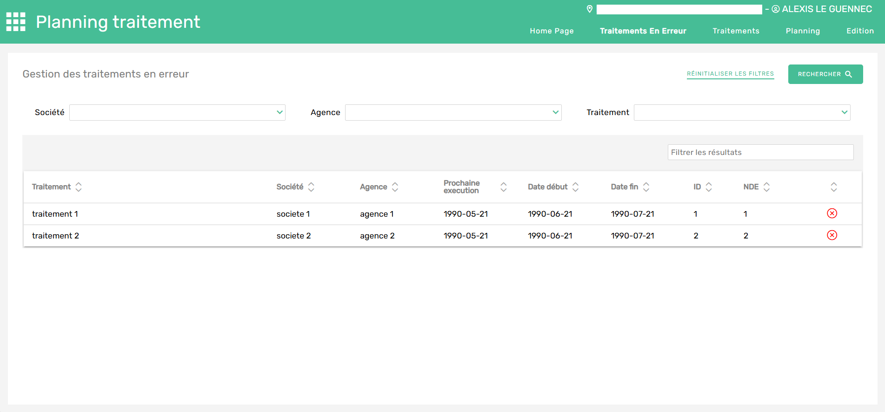

Objectifs
Le Groupe SAMSE utilise un ERP (Enterprise Resource Planning) appelé Bravo
qui permet de gérer et d’intégrer l’ensemble des processus de l’entreprise.
L’ERP Bravo re-groupe une multitude d’outils utilisés par les différentes agences du Groupe SAMSE.
Ces outils sont appelés modules. Dans le cadre d’une refonte des modules de Bravo,
mon sujet de stage a porté sur la création d’un nouveau module de planning des traitements qui intègre une nouvelle fonctionnalité voulue par les utilisateurs.
Description/Organisation
Dans un premier temps j'ai dû me former aux environnements de développements utilisés dans l’entreprise (An-gular, Spring Boot) en commençant par effectuer les tutoriels dispnibles sur le site officiel d'Angular. Ensuite j'ai pu réaliser de petites missions simples sur des modules déjà refaits pour m'habituer à l'architecture des fichiers et à la structure du code.
En second temps j'ai recueilli des informations auprès des utilisateurs de l'ancien module pour connaitre les fonctionnalités à garder, à retirer et à ajouter. Ensuite j'ai pu réaliser une maquette en utilisant l'outil Whimsical.
Après l'approbation de la maquette par les utilisateurs, j'ai pu commencer le développement de l'application Web. Le développement se fait en deux parties, d'abord le front-end, codée sur Angular, qui gère les visuels et l’interactivité de l’application Web et une partie back-end, codée sur Spring boot, qui gère la communication avec des Web Services. Les Web Services ont pour mission d’interagir avec la base de données pour remonter aux modules les données nécessaires. Ils permettent aussi de mettre à jour la base de données.
Techniques et savoir faire acquis
- Bases de la programmation sur Angular et Spring boot.
- Découverte du travail en entreprise et appliquation de la gestion de projet dans un cas concret.
- Adopter de bonnes pratiques de conception et de programmation.
